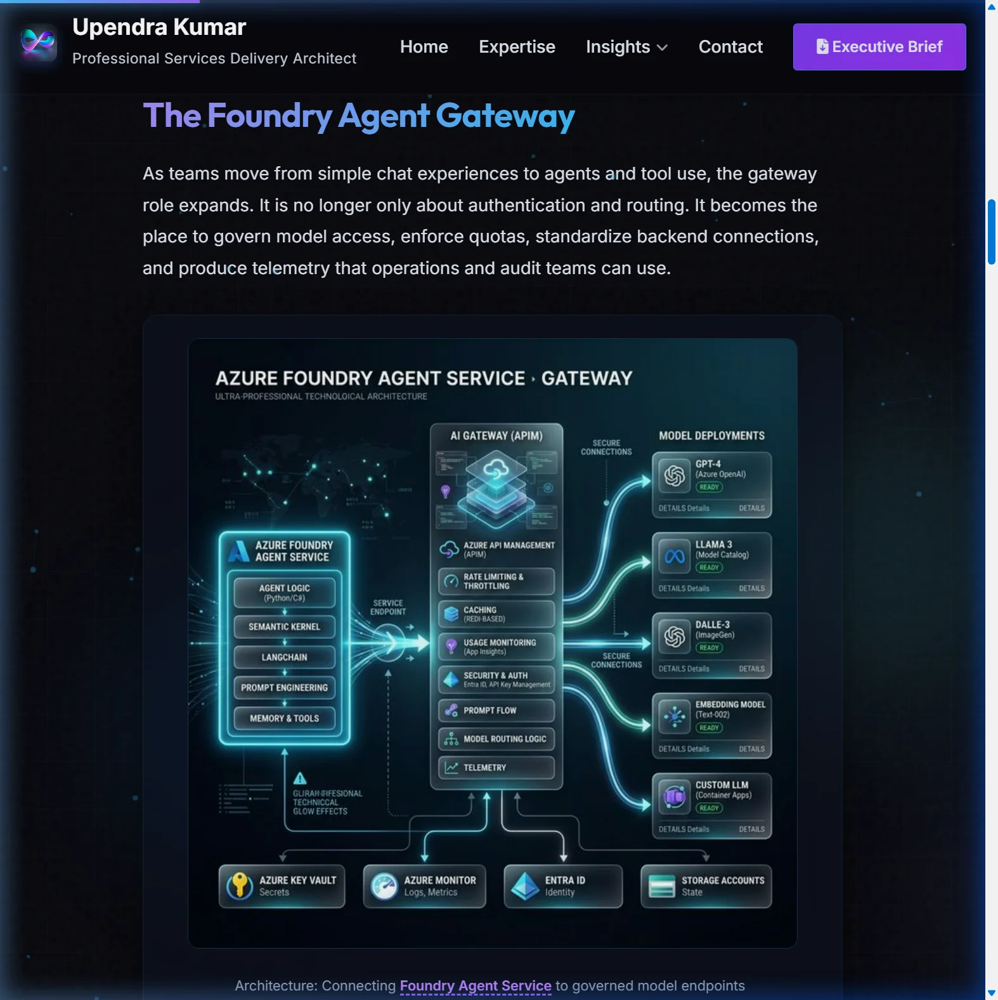
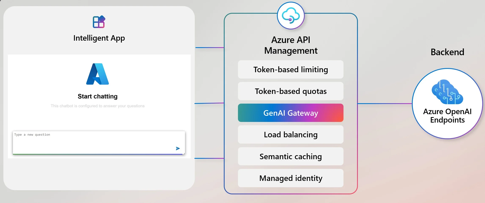
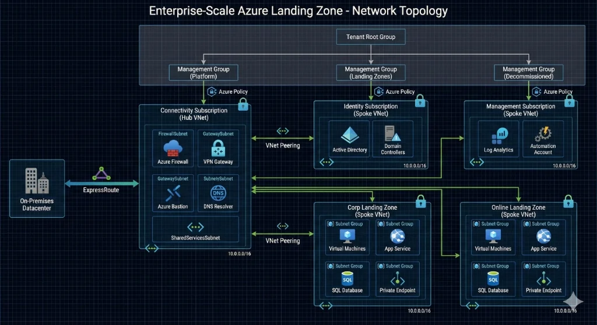

Apr 10, 2026
Modern Azure Resilience: The ROI of Survivability
Why High Availability is no longer enough. Learn to architect for self-healing and blast radius reduction.
Read StrategyI shape Azure and AI pursuits for regulated enterprises, from first discovery to a funded first phase, and put nothing in the proposal the estimate can’t support. Twenty years of hands-on delivery is how I know the difference.
$2M–$8M TCV pursuits Microsoft co-sell Azure Migrate & Modernize, ECIF, Azure Accelerate
I help enterprises decide what to build on Azure, and what it will cost, before they commit. As Senior Manager, Azure Pre-Sales in Cognizant’s Microsoft Business Group, I own the solution and commercial model behind each pursuit, and the delivery plan that has to stand behind it.
I came to pre-sales from delivery, after leading Azure Landing Zone and migration programs, including in regulated environments. That is why my proposals hold up after the deal closes: I have built the architecture, the Zero Trust and governance model and the Terraform automation behind them, not just drawn them.
I build pursuits alongside Microsoft account teams, and I shape how the first phase gets funded. I have used Microsoft partner programs, including Azure Migrate & Modernize, ECIF and Azure Accelerate, to lower the client’s cost and risk of getting started.
On AI, I built an AI compliance and governance framework on Azure AI Foundry, so clients can move GenAI from pilot into production with controls their risk and compliance teams accept.
Turning client priorities into a scoped opportunity: business case, solution options and a commercial model the client can approve.
Taking architectures and business cases to client leadership in the language of risk, cost and time to value.
Every proposal carries the delivery plan, assumptions and risks, reviewed with the delivery team, so what wins is what gets built.
Architecting secure, scalable Hub-Spoke topologies. Enforcing Zero Trust baselines and Policy-as-Code across distributed hybrid environments.
Leading enterprise Azure cloud and AI pursuits from first discovery to solution, commercial model and delivery plan, aligning architects, delivery and commercial teams behind one proposal.
Orchestrating zero-downtime cutovers for mission-critical workloads using Azure Migrate and modernization patterns.
Turning pursuit lessons into published playbooks on business cases, partner funding and AI pre-sales, and mentoring architects on CAF-aligned design.
Read the playbooksEnterprise-grade cloud foundation demonstrating architecture leadership and strategic thinking.
"A proposal is only as good as what gets built from it. I design the secure Azure foundations that let enterprises adopt AI with controls their risk teams accept, and I write them into the pursuit before the contract is signed."

Architected a governance framework for Enterprise AI Platforms on Microsoft Azure AI Foundry: policy enforcement at the gateway, private networking and automated compliance evidence.
A comprehensive Phase 1 framework for de-risking enterprise cloud portfolios. Repeatable methods for CSP selection, TCO modeling, and executive consensus building.

Architected a dual-gateway GenAI solution for TrustBank, enabling secure public access for customers and private access for employees using a shared Azure OpenAI backend.

Led the architecture and implementation of a production-ready Azure foundation. Transformed organizational cloud capabilities through strategic planning and technical leadership
Choice: Terraform
Rationale: Multi-cloud requirement for future AWS expansion and existing team expertise in HCL. State management was handled via Azure Storage with locking.
Choice: Hub-and-Spoke (Traditional)
Rationale: vWAN was evaluated but rejected due to cost constraints and lack of requirement for branch-to-branch connectivity. Centralized firewall inspection was sufficient.
Choice: Management Group Scope
Rationale: Applied policies at the 'Corp' MG level to ensure inheritance across all subscriptions (Prod/Non-Prod) while allowing specific exemptions at the subscription level.
Orchestrated the end-to-end migration of mission-critical on-premise workloads to Azure. Accelerated a stalled data center exit by establishing a repeatable migration factory model.
Deep dives into Azure resilience, AI governance, and cloud strategy.
From the commercial case to the platform it runs on: what I bring to a pursuit, and what I make sure delivery can stand behind.
Independent verification of my enterprise architecture and Azure leadership.
Independently issued, exam-based credentials.
Partner-skilling badges earned by attending live sessions and passing an assessment.
All 90 badges and certifications, verified through Credly. The OpenAI credential is verified on the OpenAI Partner Network site.
View verified certificationsRole‑based Azure, AI, and architecture learning paths captured in an official Microsoft transcript.
View learning transcriptEndorsements, thought leadership, and community work across Azure and enterprise architecture.
Connect on LinkedInConversations on Azure, AI and pre-sales, and invitations to speak
Azure & AI Pre-Sales, Business Cases & Partner Funding, Secure Agentic AI
Open to remote and hybrid opportunities